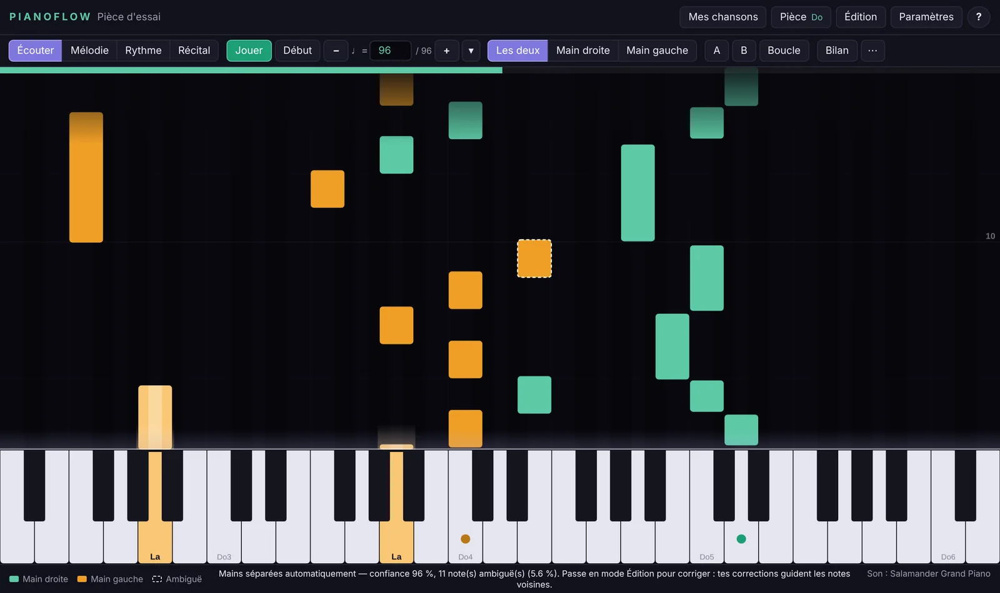
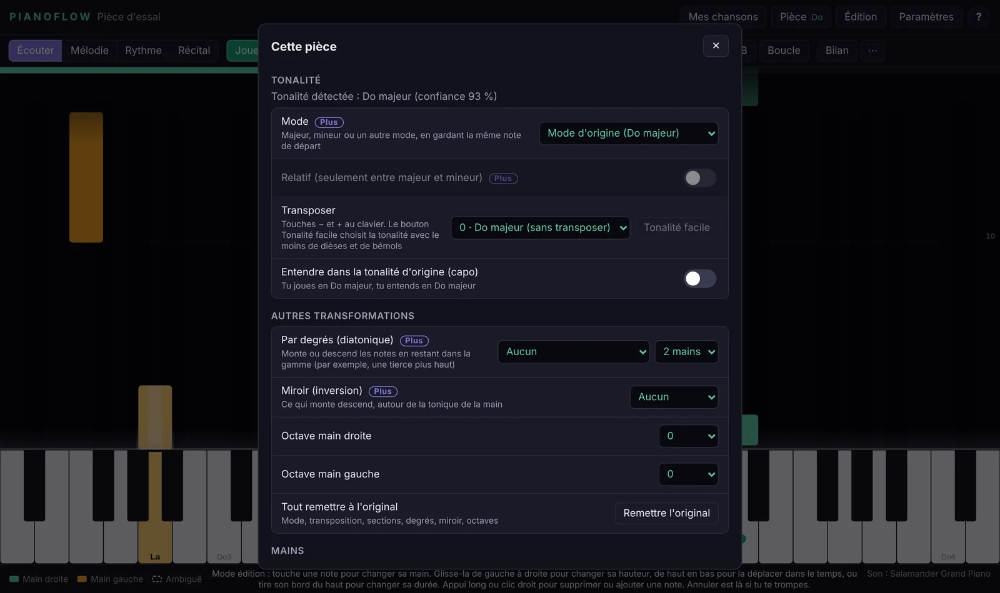
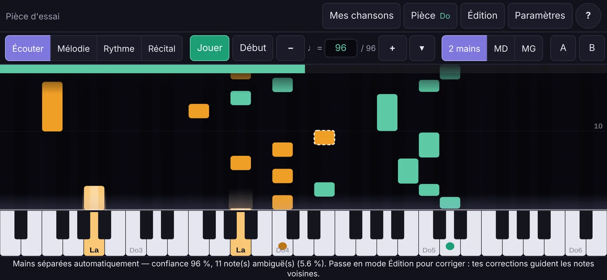

Learn your piano pieces one hand at a time
Give HammerTime Piano a MIDI file. The notes fall toward the keyboard and you play them at your own pace, slowed down or looping the passage that trips you up. The app works out the right hand and the left hand by itself.
Beta version, for Windows and Android. The app works offline.

Hand separation
A messy file is not a problem
A lot of the MIDI files you find online are live recordings on a single track, with nothing saying which hand plays what. HammerTime Piano figures it out.
The notes it isn't sure about are dashed. Tap a note to move it to the other hand, and the app takes another look at the nearby notes it had doubts about. The ones it was certain of, it leaves alone.
95.3%
of notes land in the right hand, measured on 271 pieces that arrangers had already split by hand.
What it does
From the first listen to the recital
-
Four ways to play
Listen, to watch. Melody, where the song waits until you play the right note. Rhythm, where it keeps going without you. Recital, one take at full speed.
-
Slow down, loop, repeat
Speed from 25 to 200%, a tempo in BPM, and a loop between two points to drill a passage until it sticks. The app can play the other hand while you work on yours.
-
Plug in your keyboard
A USB MIDI keyboard is detected on its own, and the app switches to Melody mode. On Android, you may need an OTG adapter.
-
A report after every take
Your wrong notes, where you were early or late, the bars to work on. One button loops you straight onto the weakest spot.
-
Fix what's off
Move a note to the other hand, shift it, lengthen it, delete it or add one. Undo and redo work everywhere, and everything is saved with the song and in the MIDI export.
-
Change the key
Go up or down a semitone at a time, pick the easiest key, or play in an easy key while hearing the original with the capo.


The app is in English and French. These pictures show the French interface.
Free and Plus
Everything you need to learn a piece is free
Hand separation, corrections, the four play modes, the loop, the report, semitone transposition, the capo, the octave of each hand and the included instruments (one sound per hand) are all free.
HammerTime Piano Plus is in the works. Nothing is for sale yet. It will add the more advanced tools:
- Major and minor, church modes, relative key, scale degrees and mirror
- Sections and modulations
- Sheet music PDF export
- MIDI export with a Plus transposition or note corrections
- Full file processing (Windows)
- Progress chart and automatic tempo increase
- Your own sound banks (SoundFont .sf2 / .sf3), kept in the app
You can already try these settings in the app. They are marked "Plus Preview": they play normally, but they aren't saved and you can't export while they're on.
Download
Install HammerTime Piano
These buttons always give you the current version. The notes for each version are on the releases page.
Windows
The app isn't signed yet, so Windows will show "Windows protected your PC". That's expected: click More info, then Run anyway.
To check your download, open PowerShell in your Downloads folder and run Get-FileHash .\HammerTimePiano-Windows.msi. The result must match the .msi line in SHA256SUMS.txt, which also lists the checksums of the .exe installer and the APK.
Android
- Open the file on your phone.
- Allow installing unknown apps when Android asks. The app doesn't go through Google Play.
- To update, install the new version over the old one: your songs stay.
Full file processing is on Windows only.
HammerTime Piano is in beta, so some things still snag. A bug, an idea, a file that splits badly? In the app, open Settings then "Give feedback", or open an issue on GitHub.
Your data
Everything stays on your device
Your MIDI files, settings, corrections and history stay on your device. The app doesn't need a connection and sends nothing. This page uses no analytics and no external fonts; it only remembers the language you picked, in your browser. It is hosted on GitHub Pages.
Questions
What people often ask
Which files can I open?
MIDI files (.mid). It can be a live recording on a single track, or a file already split into two tracks, one per hand. Add them in "My songs" or drop them on the window. On Windows, you can also import a whole folder.
I've used Synthesia. What's different?
The idea is the same: notes falling toward a keyboard. HammerTime Piano adds automatic hand separation from a single-track file, a report after every take, and note and hand corrections right in the app.
The sound is out of sync with the picture.
Open Settings, then Display, and adjust "Audio/video sync". Auto suits most devices. Otherwise, try larger values until the sound lands at the right moment.
I want to hear the piece on my keyboard.
Open Settings, then "Sound output", and turn on your keyboard. The "Test" button plays four notes to check. On Windows, close Synthesia first: some MIDI drivers can't be shared between two programs.
A feature is marked "Plus". What does that mean?
HammerTime Piano Plus is a paid version in the works, not for sale yet. You can try its settings as a preview, but they aren't saved with the song and export stays locked while they're on.